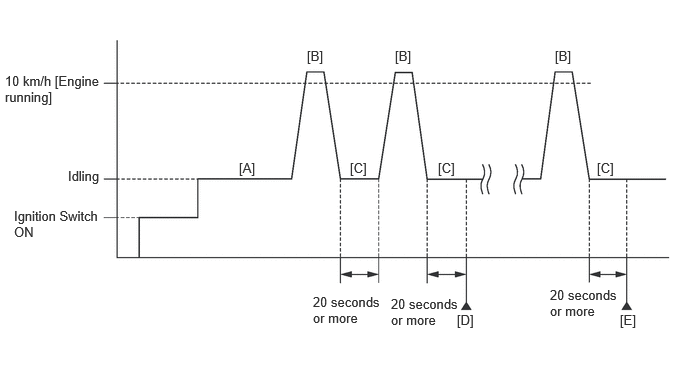

- Throttle body with throttle position sensor assembly*3
- Cleaning the deposits from the throttle body with throttle position sensor assembly*3
| Last Modified: 12-09-2025 | 6.11:8.1.0 | Doc ID: RM100000002LJH8 |
| Model Year Start: 2024 | Model: Tacoma HV | Prod Date Range: [03/2024 - ] |
| Title: T24A-FTS (ENGINE CONTROL): SFI SYSTEM (for 1Motor-HEV Model): INITIALIZATION; 2024 - 2026 MY Tacoma HV [03/2024 - ] | ||
INITIALIZATION
Inspection After Repair
Perform Learning Value Reset and Idle Learning after replacing or servicing parts related to engine operation. Details on procedures required are indicated by an asterisk and a number, and are explained in detail following the table.
|
Part Replaced |
Engine Operation |
Learning Value Reset*1 |
Idle Learning*2 |
|---|---|---|---|
|
|
- |
○ |
○ |
|
Engine assembly |
- |
○ |
○ |
|
Confirm the following and perform Learning Value Reset and Idle Learning when one or more of the following conditions is met:
|
○ |
○ |
|
The none of the conditions in the list above are met. |
- |
- |
|
|
Knock control sensor*4 |
- |
- |
- |
- ○: Necessary.
- -: Unnecessary.
NOTICE:
Engine learned values cannot be reset by disconnecting the cable from the negative (-) auxiliary battery terminal or removing the EFI MAIN NO. 1 fuse.
-
*1: Learning Value Reset
- Enter the following menus: Powertrain / Engine / Utility / Learning Value Reset.
-
Confirm the following conditions as instructed on the screen.
- - Ignition switch ON
- - Engine stopped
- - Auxiliary battery voltage is higher than 9 V
-
After confirming, select "Next" and initialize the learned value.
HINT:
If a message indicating learned value initialization failure is displayed on the screen, confirm the execution conditions, and perform learned value initialization again.
-
After the completion of learned value initialization, confirm the air fuel ratio learned values (A/F Learn Value Idle (Port) Bank 1, A/F Learn Value Low (Port) Bank 1, A/F Learn Value Mid No.1 (Port) Bank 1, A/F Learn Value Mid No.2 (Port) Bank 1, A/F Learn Value High (Port) Bank 1, A/F Learn Value Idle Bank 1, A/F Learn Value Low Bank 1, A/F Learn Value Mid No.1 Bank 1, A/F Learn Value Mid No.2 Bank 1 and A/F Learn Value High Bank 1) in the Data List.
If 0 is displayed for all of the air fuel ratio learned values, initialization has completed correctly.
If a value other than 0 is displayed for one of the air fuel ratio learned values, perform initialization again. After initialization, confirm the air fuel ratio learned values. If a value other than 0 is displayed, replace the ECM.
-
*2: Idle Learning
- Turn the ignition switch off and wait for at least 30 seconds.
-
Put the engine in Inspection Mode (for measuring Exhaust Gas).
Click here
![2024 - 2026 MY Tacoma Tacoma HV [12/2023 - ]; INTRODUCTION: REPAIR INSTRUCTION: INSPECTION MODE PROCEDURE](../../../../stylegraphics/info.gif)
-
Start the engine and warm it up with the air conditioning and all accessories off, until the engine coolant temperature is 75°C (167°F) or higher.
HINT:
Learning starts when the engine coolant temperature is 75°C (167°F) or higher.
- Turn the ignition switch off, and then to ON (READY).
- With the shift lever in P, lightly depress the accelerator pedal to start the engine.
-
Wait until the engine stops.
HINT:
The engine normally stops within 1 minute. However, when the HV battery SOC is low, the engine may remain running for approximately 3 minutes.
- Enter the following menus: Powertrain / Engine / Data List / ISC Learning.
- Confirm that "Compl" is displayed on the GTS screen.
-
Put the engine in Inspection Mode (for measuring Exhaust Gas).
Click here
- Start the engine.
- Enter the following menus: Powertrain / Engine / Data List / Engine Speed and Engine Independent.
-
Check the Engine Speed when the value of Data List item Engine Independent is "Operate".
Standard:
Engine Idle Speed
875 to 975 rpm
HINT:
- Be sure to perform this step with the A/C switch and all accessories off.
- Make sure that the shift lever is in P.
- If the value of Data List item Engine Independent is "Not Opr" when the engine is idling, charge control is being performed. Check the Engine Speed after charge control is complete ("Operate" is displayed).
-
*3: Perform Learning Value Reset and Idle Learning after replacing the throttle body with throttle position sensor assembly or cleaning deposits from the throttle body with throttle position sensor assembly.
After that, check the idle speed. If the idle speed is out of the specified range, perform the following procedure.
CAUTION:
When performing the confirmation driving pattern, obey all speed limits and traffic laws.
HINT:
History information for driving and stopping is necessary to update Idle Learning.
-
Put the engine in Inspection Mode (for measuring Exhaust Gas).
Click here
- Warm up the engine (engine coolant temperature of 75°C (167°F) or higher) with the A/C switch and all accessories off [A].
-
While the engine running, drive the vehicle at a speed of 10 km/h (6 mph) or more [B].
HINT:
If the engine stops, further depress the accelerator pedal to restart the engine.
- Idle the engine for 20 seconds or more [C].
- Repeat procedure [B] and [C].
- Enter the following menus: Powertrain / Engine / Data List / Engine Speed and Engine Independent.
-
Check the Engine Speed when the value of Data List item Engine Independent is "Operate" [D].
Standard:
Engine Idle Speed
875 to 975 rpm
HINT:
- Be sure to perform this step with the A/C switch and all accessories off.
- Make sure that the shift lever is in P.
- If the value of Data List item Engine Independent is "Not Opr" when the engine is idling, charge control is being performed. Check the Engine Speed after charge control is complete ("Operate" is displayed).
- If the idle speed is still out of the specified range, repeat procedure [B] and [C] until the idle speed is within the specified range [E].
-
Put the engine in Inspection Mode (for measuring Exhaust Gas).
- *4: Drive the vehicle for a short while after replacing the knock control sensor, and check if knocking occurs. If knocking occurs, drive the vehicle until knocking stops.
CLEAR HEAVY KNOCK HISTORY
HINT:
This function initializes the stored history data when the piston rings are replaced.
(a) Enter the following menus: Powertrain / Engine / Utility / Heavy Knock History / Clear History.
Powertrain > Engine > Utility
|
Tester Display |
|---|
|
Heavy Knock History |
(b) Initialize the history data according to the GTS screen instructions.
SWITCH SPECIFICATION INFORMATION
HINT:
- Perform Switch Specification Information after replacing the ECM.
- Perform Switch Specification Information using Utility of the GTS.
- Perform the Health Check using the GTS and check that no DTC is output.
(a) Enter the following menus: Powertrain / Engine / Utility / Switch Specification Information.
(b) According to the prompts on the GTS screen, perform Switch Specification Information.
(c) Enter the following menus: Powertrain / Engine / Data List / Suspension Control Module Specification Information and Active Grille Air Shutter Module Specification Information.
(d) Check that the Data List displays a result other than Incomplete.
NOTICE:
If Incomplete is displayed, perform Switch Specification Information using Utility again.
CHANGE GRILLE SHUTTER CONTROL MODE AND/OR PERFORM INITIALIZATION
In the following situations, it is necessary to change the grille shutter control mode and/or initialize the grille shutter system.
|
Change Control Mode (Normal Mode → Maintenance Mode) |
Change Control Mode (Maintenance Mode → Normal Mode) |
Initialize |
|
|
Before removing the radiator shutter sub-assembly. |
○ |
- |
- |
|
When the radiator shutter sub-assembly. has been replaced with a new one |
- |
○ |
○ |
|
After installing the radiator shutter sub-assembly. |
- |
○ |
○ |
|
Before troubleshooting |
○ |
- |
- |
|
After troubleshooting |
- |
○ |
- |
NOTICE:
In order to ensure safety, before performing troubleshooting or removing the radiator shutter sub-assembly, change the grille shutter control mode to maintenance mode.
HINT:
- When the grille shutter system is in maintenance mode, the grille shutter will not operate when operation signals are received.
- When driving the vehicle to change the grille shutter control mode and/or perform initialization, make sure the grille shutter system is in maintenance mode. Initialization cannot be performed and the grille shutter control mode cannot be changed by driving the vehicle if the grille shutter system is in normal mode.
WHEN USING GTS
-
Change the control mode to maintenance mode
- Enter the following menus: Powertrain / Engine / Utility / Switch Grille Shutter Control Mode.
- According to the display on the GTS, change the grille shutter control mode from normal mode to maintenance mode.
-
Change the control mode to normal mode
- Enter the following menus: Powertrain / Engine / Utility / Switch Grille Shutter Control Mode.
- According to the display on the GTS, change the grille shutter control mode from maintenance mode to normal mode.
-
Initialize
- Enter the following menus: Powertrain / Engine / Utility / Grille Shutter Initialization / Initialization operation (Low Torque).
- According to the display on the GTS, perform initialization.
WHEN DRIVING THE VEHICLE
-
Change the control mode to normal mode and initialize
HINT:
When changing the grille shutter control mode and/or performing initialization by driving the vehicle, the grille shutter control mode can only be changed and initialization can only be performed if the grille shutter system is in maintenance mode.
- Turn the ignition switch to ON (READY).
- Drive the vehicle at a speed of 15 km/h (9 mph) or more. The grille shutter control mode will be changed and initialization (low torque) will be performed automatically when the vehicle speed exceeds 15 km/h (9 mph).
|
|
|